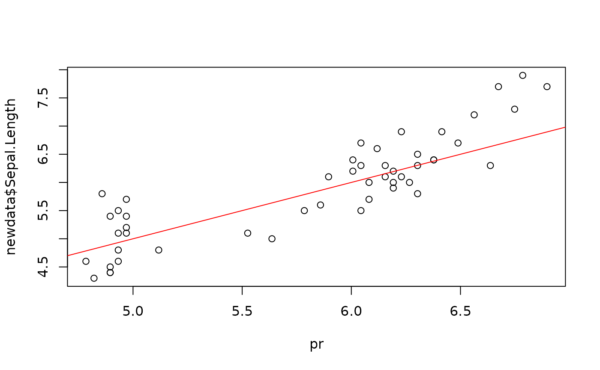

DSRegressor_SlidingWindow – Data Stream Regressor Using a Sliding Window
Source:R/DSRegressor_SlidingWindow.R
DSRegressor_SlidingWindow.RdThe Regressor keeps a sliding window for the stream and rebuilds a regression model at regular
intervals. By default is builds a decision tree using lm().
Usage
DSRegressor_SlidingWindow(formula, model = stats::lm, window, rebuild, ...)Arguments
- formula
a formula for the classification problem.
- model
regression model (that has a formula interface).
- window
size of the sliding window.
- rebuild
interval (number of points) for rebuilding the regression. Set rebuild to
Infto prevent automatic rebuilding. Rebuilding can be initiated manually when callingupdate().- ...
additional parameters are passed on to the regressor (default is
lm()).
Details
This constructor creates a regressor based on DST_SlidingWindow. The regressor has
a update() and predict() method.
See also
Other DSRegressor:
DSRegressor()
Examples
library(stream)
# create a data stream for the iris dataset
data <- iris[sample(nrow(iris)), ]
stream <- DSD_Memory(data)
# define the stream Regressor.
cl <- DSRegressor_SlidingWindow(
Sepal.Length ~ Petal.Length + Petal.Length,
window = 50,
rebuild = 10
)
cl
#> Data Stream Regressor on a Sliding Window
#> Function: stats::lm
#> Class: DSRegressor_SlidingWindow, DSRegressor, DST_SlidingWindow, DST
# update the regressor with 100 points from the stream
update(cl, stream, 100)
# predict the class for the next 50 points
newdata <- get_points(stream, n = 50)
pr <- predict(cl, newdata)
pr
#> 71 130 56 53 15 128 112 72
#> 6.192264 6.562814 6.081100 6.229319 4.858287 6.229319 6.377539 5.895825
#> 59 134 132 79 123 14 75 25
#> 6.118155 6.303429 6.785143 6.081100 6.896308 4.821232 6.006990 5.117672
#> 127 94 39 70 98 120 22 16
#> 6.192264 5.636441 4.895342 5.858770 6.006990 6.266374 4.969452 4.969452
#> 13 139 111 57 23 42 17 140
#> 4.932397 6.192264 6.303429 6.155210 4.784177 4.895342 4.895342 6.414594
#> 7 34 11 91 143 141 66 108
#> 4.932397 4.932397 4.969452 6.044045 6.303429 6.488704 6.044045 6.748088
#> 43 116 99 82 136 33 18 64
#> 4.895342 6.377539 5.525276 5.784660 6.673979 4.969452 4.932397 6.155210
#> 88 101
#> 6.044045 6.636924
plot(pr, newdata$Sepal.Length)
abline(0, 1, col = "red")

# get the tree model
get_model(cl)
#>
#> Call:
#> (function (formula, data, subset, weights, na.action, method = "qr",
#> model = TRUE, x = FALSE, y = FALSE, qr = TRUE, singular.ok = TRUE,
#> contrasts = NULL, offset, ...)
#> {
#> ret.x <- x
#> ret.y <- y
#> cl <- match.call()
#> mf <- match.call(expand.dots = FALSE)
#> m <- match(c("formula", "data", "subset", "weights", "na.action",
#> "offset"), names(mf), 0L)
#> mf <- mf[c(1L, m)]
#> mf$drop.unused.levels <- TRUE
#> mf[[1L]] <- quote(stats::model.frame)
#> mf <- eval(mf, parent.frame())
#> if (method == "model.frame")
#> return(mf)
#> else if (method != "qr")
#> warning(gettextf("method = '%s' is not supported. Using 'qr'",
#> method), domain = NA)
#> mt <- attr(mf, "terms")
#> y <- model.response(mf, "numeric")
#> w <- as.vector(model.weights(mf))
#> if (!is.null(w) && !is.numeric(w))
#> stop("'weights' must be a numeric vector")
#> offset <- model.offset(mf)
#> mlm <- is.matrix(y)
#> ny <- if (mlm)
#> nrow(y)
#> else length(y)
#> if (!is.null(offset)) {
#> if (!mlm)
#> offset <- as.vector(offset)
#> if (NROW(offset) != ny)
#> stop(gettextf("number of offsets is %d, should equal %d (number of observations)",
#> NROW(offset), ny), domain = NA)
#> }
#> if (is.empty.model(mt)) {
#> x <- NULL
#> z <- list(coefficients = if (mlm) matrix(NA_real_, 0,
#> ncol(y)) else numeric(), residuals = y, fitted.values = 0 *
#> y, weights = w, rank = 0L, df.residual = if (!is.null(w)) sum(w !=
#> 0) else ny)
#> if (!is.null(offset)) {
#> z$fitted.values <- offset
#> z$residuals <- y - offset
#> }
#> }
#> else {
#> x <- model.matrix(mt, mf, contrasts)
#> z <- if (is.null(w))
#> lm.fit(x, y, offset = offset, singular.ok = singular.ok,
#> ...)
#> else lm.wfit(x, y, w, offset = offset, singular.ok = singular.ok,
#> ...)
#> }
#> class(z) <- c(if (mlm) "mlm", "lm")
#> z$na.action <- attr(mf, "na.action")
#> z$offset <- offset
#> z$contrasts <- attr(x, "contrasts")
#> z$xlevels <- .getXlevels(mt, mf)
#> z$call <- cl
#> z$terms <- mt
#> if (model)
#> z$model <- mf
#> if (ret.x)
#> z$x <- x
#> if (ret.y)
#> z$y <- y
#> if (!qr)
#> z$qr <- NULL
#> z
#> })(formula = Sepal.Length ~ Petal.Length + Petal.Length, data = structure(list(
#> Sepal.Length = c(6.5, 5.7, 5, 5.5, 6.2, 7.7, 6.8, 5.7, 6,
#> 5.9, 5.9, 4.9, 5.6, 5.6, 5, 5.7, 5, 5.5, 5.6, 6.7, 6.7, 5.1,
#> 5, 5.6, 5.1, 5.1, 7.2, 6.3, 6.1, 6.4, 4.9, 5, 6.4, 7.1, 4.9,
#> 5.8, 5.1, 6.6, 6.8, 5, 6.9, 5.4, 5.1, 6.5, 5.2, 5.2, 5.6,
#> 4.9, 6.1, 6.3), Sepal.Width = c(2.8, 2.9, 3.2, 2.3, 3.4,
#> 2.6, 3, 3.8, 2.2, 3, 3, 3.1, 3, 2.7, 3.4, 2.6, 3.5, 2.4,
#> 2.8, 3, 3.3, 3.3, 3, 3, 3.8, 3.5, 3.6, 2.5, 3, 2.8, 3.6,
#> 3.5, 3.1, 3, 3.1, 2.6, 3.4, 3, 2.8, 3.3, 3.1, 3, 3.8, 3,
#> 3.4, 2.7, 2.9, 2.5, 2.8, 2.9), Petal.Length = c(4.6, 4.2,
#> 1.2, 4, 5.4, 6.9, 5.5, 1.7, 4, 4.2, 5.1, 1.5, 4.5, 4.2, 1.5,
#> 3.5, 1.6, 3.8, 4.9, 5.2, 5.7, 1.7, 1.6, 4.1, 1.6, 1.4, 6.1,
#> 4.9, 4.6, 5.6, 1.4, 1.3, 5.5, 5.9, 1.5, 4, 1.5, 4.4, 4.8,
#> 1.4, 5.1, 4.5, 1.5, 5.5, 1.4, 3.9, 3.6, 4.5, 4.7, 5.6), Petal.Width = c(1.5,
#> 1.3, 0.2, 1.3, 2.3, 2.3, 2.1, 0.3, 1, 1.5, 1.8, 0.1, 1.5,
#> 1.3, 0.2, 1, 0.6, 1.1, 2, 2.3, 2.5, 0.5, 0.2, 1.3, 0.2, 0.2,
#> 2.5, 1.5, 1.4, 2.1, 0.1, 0.3, 1.8, 2.1, 0.2, 1.2, 0.2, 1.4,
#> 1.4, 0.2, 2.3, 1.5, 0.3, 1.8, 0.2, 1.4, 1.3, 1.7, 1.2, 1.8
#> ), Species = structure(c(2L, 2L, 1L, 2L, 3L, 3L, 3L, 1L,
#> 2L, 2L, 3L, 1L, 2L, 2L, 1L, 2L, 1L, 2L, 3L, 3L, 3L, 1L, 1L,
#> 2L, 1L, 1L, 3L, 2L, 2L, 3L, 1L, 1L, 3L, 3L, 1L, 2L, 1L, 2L,
#> 2L, 1L, 3L, 2L, 1L, 3L, 1L, 2L, 2L, 3L, 2L, 3L), levels = c("setosa",
#> "versicolor", "virginica"), class = "factor")), row.names = c(NA,
#> -50L), class = "data.frame"))
#>
#> Coefficients:
#> (Intercept) Petal.Length
#> 4.4136 0.3705
#>